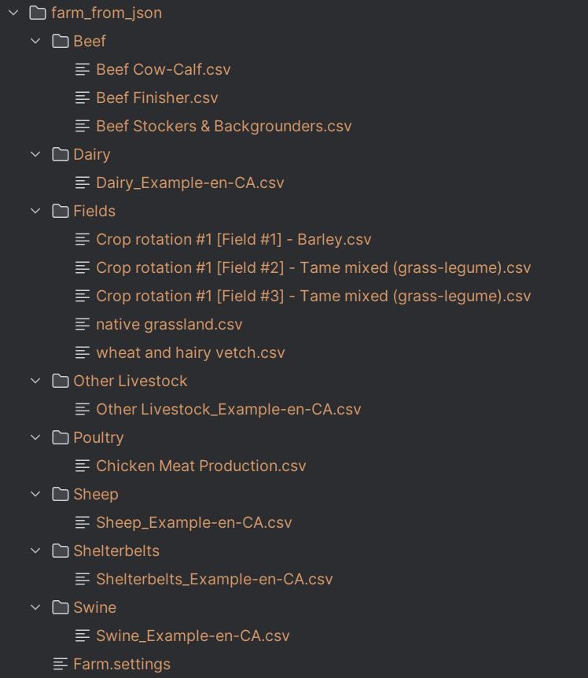
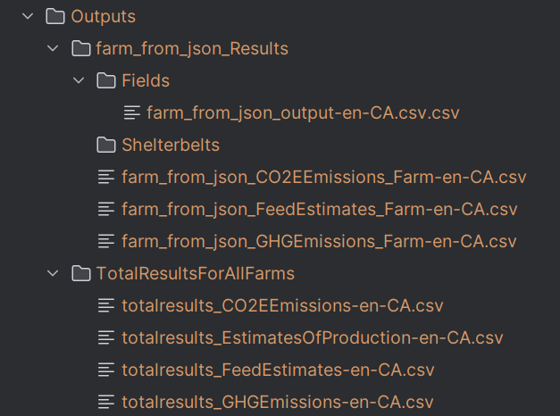

Usage
Launch Holos CLI on existing farm data
In case the user already has farm data available, PyHolos can simply be used to launch the Holos CLI on the existing
farm data. This can be performed using the function launch_holos whose usage is demonstrated in the minimal_usage
example under the example directory.
Case 1: The user exported farm data from the Holos GUI without parsing
In this case, a JSON file is obtained. The function run_using_json_file shows how launch_holos will tell
Holos CLI to parse first the JSON file into TXT and CSVs, then to launch the simulation using those parsed files.
The structure of the parsed farm data is identical to that expected by Holos CLI (see Fig. 1).
{kind=link}

Fig. 1 Structure of the farm data expected by Holos CL.
Case 2: The user exported and parsed the farm data into the appropriate files
In this case, the farm data folder includes all the required files. The function run_using_existing_farm_data shows
how launch_holos will directly launch Holos CLI on those data.
Outputs
The outputs obtained by running PyHolos on either case 1 or 2 described above, are the same and are those returned by the Holos CLI without any modification.
{kind=link}

Fig. 2 Structure of the Holos CLI outputs.
Create Holos CLI inputs from user-defined inputs and launch Holos CLI
In some cases, the user may not have all the data required to directly launch Holos CLI. For example, the values of the parameters required to simulate the field Green House Gas (GHG) can be tricky and hard to define. In such cases, PyHolos can be used to estimate all the missing parameter values by using the same equations implemented in the Holos source code.
The directory extended_usage shows how to construct the complete set of Holos CLI data with a minimal number of user inputs.